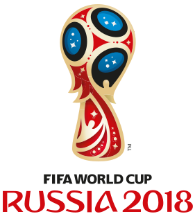
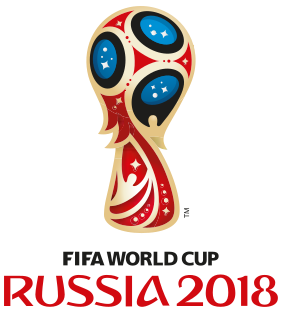

The forgetting of the 2010 FIFA World Cup in relation to collective memory can be attributed to several factors. Firstly, as time passes, people tend to forget about past events. Additionally, the occurrence of subsequent FIFA World Cups and other major sporting events may overshadow the significance of the 2010 tournament, diverting attention away from it. Changes in societal interests and priorities over time can also contribute to the fading of the collective memory, as newer events and experiences take precedence in people's consciousness. Furthermore, the lack of ongoing commemorative efforts or cultural initiatives aimed at preserving the memory of the 2010 World Cup may further accelerate its process of forgetting.